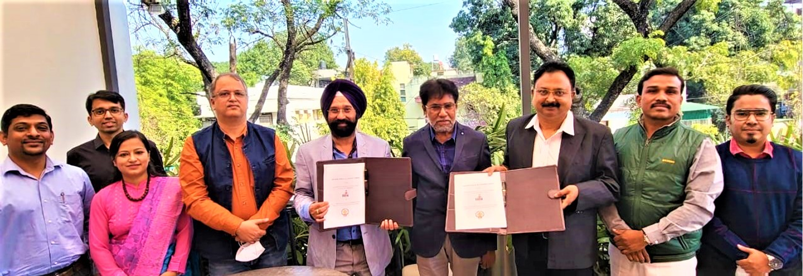

MOU
(Memorandum Of Understanding)

IIIT Nagpur MOUs
- Signed with Swargiya Dadasaheb Kalmegh Smruti Dental College & Hospital, Wanadongari, Nagpur on 28th
June 2022.
- Signed with Central India Institute of Medical Sciences (CIIMS), Nagpur on 5th January 2022.
- Signed with E-Spin Nanotech Pvt Ltd., IIT Kanpur on 27th January 2021. Signed with Datta Meghe
Institute of Medical Sciences, Sawangi Meghe, Wardha on 13th March 2020 for two years (2020-2022).
- Signed with Advance Tech India Pvt. Ltd., Punjab, India on 23rd December 2020 to collaborate on
innovation needed by the company.
- Signed with Military College of Telecommunication Engineering (MCTE), Madhya Pradesh for PG Diploma
in 2020.
- Signed with AIIMS, Nagpur in 2020 for research collaboration and need-based projects. Dr. Mayur
Parate developed a device for tracking & monitoring COVID-19 patients.
- Signed with IIM Nagpur Foundation for Entrepreneurship Development (InFED) in 2020 to explore new
age digital/technical ideas, concepts, practices, products, and services.
- Signed with Datta Meghe Institute of Medical Sciences, Sawangi Meghe, Wardha in 2020 for research
collaboration and need-based projects.